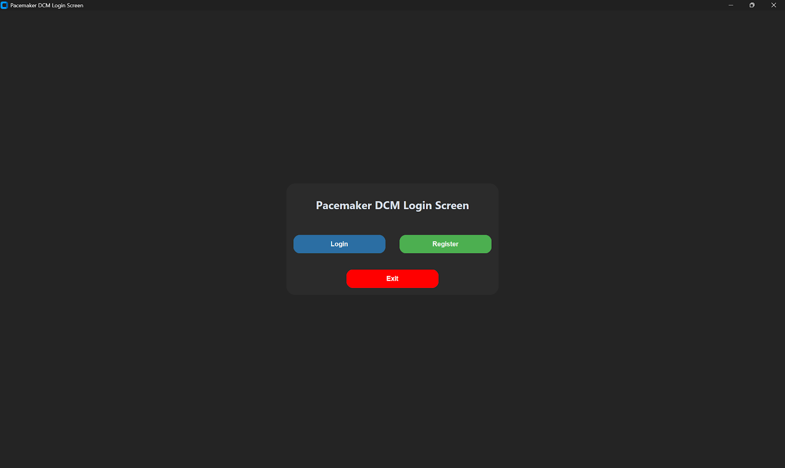

This project was a comprehensive group effort involving six students: Adam Suljak, Jonathan Hincks, Yat Yin Hui (Heidi), Joshua Guo, Manan Dua, and Mohammad Mustafa. We adopted an Agile-like workflow, breaking down the massive requirements into modular tasks.
The development was split into distinct domains to ensure efficiency:
- DCM Team: Focused on the Python GUI using CustomTkinter, implementing the Login, Pacing Modes, and Reports modules, and managing the SQLite database.
- Pacemaker Team: Developed the Simulink models for the Bradycardia operating modes (AOO, VOO, AAI, VVI, etc.) and the rate-adaptive algorithms.
- Integration: We collaborated closely to establish the UART serial communication protocol, ensuring seamless data transfer between the Python interface and the embedded hardware.